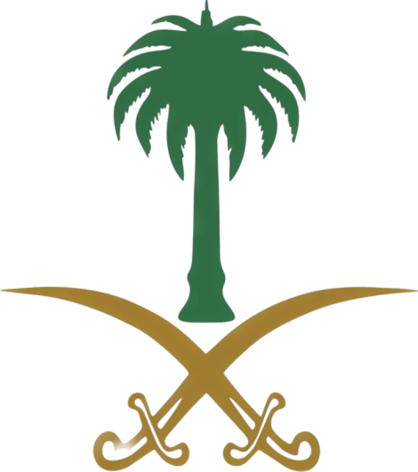

Born on August 31, 1985, in the capital Riyadh. He was raised by his father, the Custodian of the Two Holy Mosques King Salman Bin Abdulaziz Al Saud, who was then serving as the Governor of Riyadh Province, and his mother, Princess Fahda Bint Falah Bin Sultan Al Hathleen. He is the sixth son of King Salman among male children. He grew up during the period when Riyadh witnessed a qualitative shift in its infrastructure, facilities, and civilized landscape.Prince Mohammed Bin Salman Bin Abdulaziz Al Saud has been the Crown Prince since June 21, 2017 and the leader of the historic transformation march in the Kingdom of Saudi Arabia. He is the first prime minister among the grandsons of King Abdulaziz, having been appointed by a Royal Order issued by the Custodian of the Two Holy Mosques King Salman Bin Abdulaziz on September 27, 2022.
On May 2, 2017, Prince Mohammed Bin Salman outlined the headlines of Saudi Vision 2030 during an interview broadcast on al-Saudiya Channel. He explained that the vision commenced by identifying ten programs set to be achieved by 2020. These programs included indicators and goals across twenty-four government entities.
Since its launch, Saudi Vision 2030 has contributed to reducing the deficit and doubling the growth of non-oil revenues. Prince Mohammed elaborated on the role of the PIF as a major catalyst for Saudi Arabia's economic advancement and the increase in its returns.
From October 23 to 25, 2018, he chaired the session of the Future Investment Initiative (FII) Forum held in Riyadh, featuring numerous CEOs, investors, and global decision-makers. During the event, twenty-five agreements and memoranda of understanding were signed, totaling a value exceeding USD 60 billion.
On January 13, 2021, he spearheaded a strategic dialogue session in AlUla as part of the World Economic Forum activities. He highlighted significant investment opportunities in Saudi Arabia, totaling approximately USD 6 trillion over the next ten years.
On April 17, 2023, Prince Mohammed Bin Salman hosted Saudi astronauts Rayyanah Barnawi, Ali al-Qarni, Mariam Fardous, and Ali Alghamdi ahead of the launch of Saudi Arabia's scientific mission to the International Space Station, marking a historic moment for the Kingdom in space exploration.